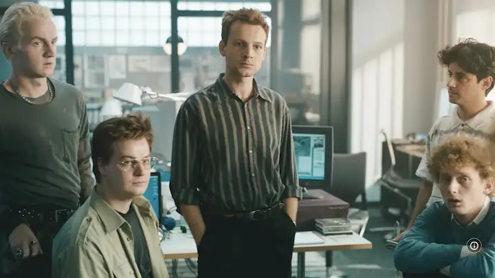

Oficinas de Art.com, mientras se desarrolla TierraVisionJuri usando el ordenador del banco, un SIG ONYX para mostrarle a su compañero una simulación
del globo terráqueo.Presentando TerraVision en Kyoto (años 90)Juri y todo el equipo, en el juzgado norteamericano luchando contra Google por
infringimiento de patente.